|
Ostia Antica Ostia Antica una de las primeras
colonias de Roma. Según nos cuenta la leyenda, fue fundada por Anco
Marcio en el siglo VII a.e.c.
Accedemos a la ciudad a través de la puerta romana. Formaba parte de la muralla romana. Construida por Sila en el 80 a.e.c. Recientemente se cree que la muralla data de al época del consulado de Cicerón.
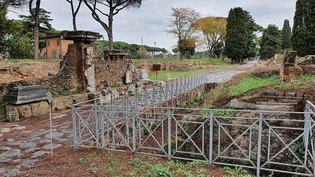 Tras cruzar la Porta Romana continuamos por el Decumanus Maximus, con 9 metros de ancho y 1,5 km de longitud. A continuación hallamos los Almacenes republicanos y las Termas de los Cisiarii (carreteros) del siglo II. El Mosaico de las Termas Provinciales. Debajo de una calle de principios del siglo II, se han sacado a la luz unas termas de la época de Claudio, cuya extensión no es posible precisar. El único elemento aún visible hoy es un mosaico en blanco y negro en el que, dentro de un marco de meandros, se encierran cuadrados con representaciones de armas y motivos geométricos. La parte central está decorada con una caja que representa delfines, flanqueada por las personificaciones de las Provincias (España, Sicilia, Egipto y África) y los vientos, simbolizados respectivamente por cabezas femeninas y masculinas.
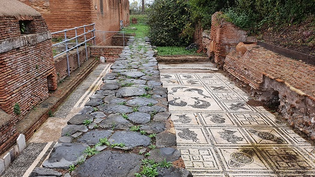 Continuamos por el Pórtico del Techo inclinado, construido en ladrillo durante el período de Adriano. Detrás del pórtico estaban los Horrea de Antonino Pio.
Las Termas Neptuno se construyeron bajo el mandato de Domiciano pero fue Antonino Pío quien las terminó. El mosaico de Neptuno es el que da nombre a estas espectaculares instalaciones.
Detrás de las Termas de Neptuno, paralela a Via dei Vigili, discurre la Via della Palestra, donde se encuentra la entrada actual del cuartel Vigili (Bomberos). Se construyeron en el año 90, pero se reformaron y se reinauguraron en el año 137. El Caesernum, sala dedicada al culto imperial.
Una pequeña Fullonica, para el lavado y teñido de los tejidos. Vía della Fullonica 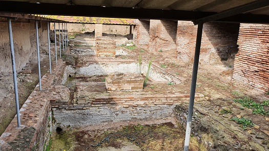 La plaza de las Corporaciones data de época de Augusto y estaba ligada a las actividades del teatro. Entre el siglo II y III se convierte en el centro de la actividad económica y comercial de la ciudad. Se construyeron una serie de stationes, 50, que más tarde se convirtieron en 64 oficinas de representación de las ciudades que tenían relaciones comerciales con Ostia. Las oficinas de las corporaciones, collegia, de negociantes, artesanos y comerciantes de Ostia.
El Teatro fue construido en 12 a.e.c. por Agripa con un aforo de 2.500.- espectadores. Cómodo le agregó el frente a los arcos de ladrillo y amplió la cavea parea unos 4.000.- espectadores. En el siglo IV, Ragonio Vincenzio Celso realizó varis modificaciones. Junto a la Plaza de las Corporaciones, el teatro de Ostia Antica formaba un grandioso conjunto arquitectónico, en cuyo interior se ubicaron los despachos de los comerciantes y mercaderes más importantes de la ciudad. En el centro destaca el templo de Ceres. 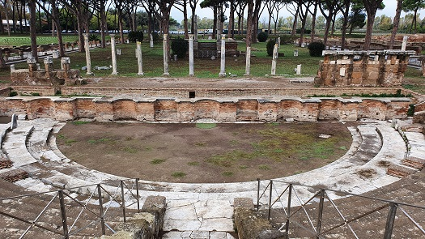
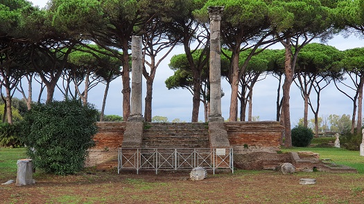 Los Cuatro Templos. Este conjunto, probablemente construido a mediados del siglo I a.e.c., consta de cuatro edificios casi idénticos en forma y tamaño, construidos en obra casi reticulada sobre una única plataforma, frente a un gran espacio abierto bordeado por una valla. Se trata de los templos de Venus, Fortuna, Ceres y Spes (Esperanza).
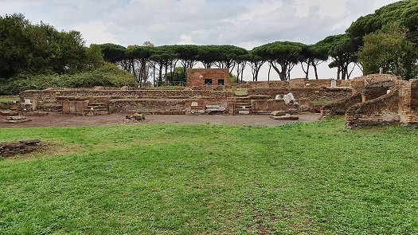 La fullonica de la Vía degli Augustali (para el teñido y lavado de telas) fue construida a principios del siglo II, transformando una casa de una época anterior. Consistía en una gran sala con techo sostenido por pilares, que albergaba cuatro grandes piscinas conectadas entre sí y revestidas con un revestimiento con función impermeabilizante. En el siglo III se agregaron 35 vasijas circulares de terracota, separadas por paredes de ladrillo sobre las que se apoyaban los trabajadores durante las operaciones de prensado de las telas. Las prendas se lavaban con diversas sustancias, como la orina, que contenían amoníaco, y se colgaban para secar sobre vigas, como nos indica la presencia de huecos en los lados de los pilares.
La Ínsula del Envidioso, fue construida durante el reinado de Antoninus Pius. Las modificaciones y los mosaicos del suelo datan de la primera mitad del siglo III. Detrás de un pórtico hay dos tiendas, un gran salón y dos escaleras. En el piso de la tienda de la esquina hay un mosaico en blanco y negro con una escena marina.
La casa de Diana. El edificio original
posiblemente tenía cinco pisos y tenia tiendas en la calle.
El Thermopolium de Diana. Fue construido en el
siglo III en el interior de un edificio del período Adriano. Daba a la
calle a través de tres accesos.
La muralla del castrum republicano. El castrum
es el núcleo arqueológicamente documentado más antiguo de la ciudad de
Ostia, que data del siglo IV a.e.c. Es un asentamiento fortificado con
muros de bloques de toba y cuatro puertas, ubicado al final de las
calles principales (Cardo y Decumano).
La Mensula de la sinagoga. Es una de las dos que originalmente decoraron el santuario de la Sinagoga Ostiense donde se colocó el gabinete para guardar los rollos de la Torá; la construcción de este santuario se menciona en una inscripción en griego que recuerda a una persona que a sus expensas donó un recipiente para los rollos sagrados.
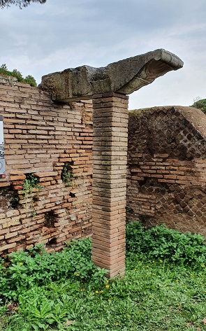 El Horrea de las Dolias (vasijas), aproximadamente un centenar, en las que se han hallado los restos de aceite y vino. El edificio comercial fue construido al mismo tiempo que la cercana Insula dei Dipinti en el período Adriano . Se caracterizaba por una hilera de comercios abiertos a la calle y un gran espacio detrás: este último se transformó a principios del siglo III, en el almacenamiento de grandes recipientes para líquidos, que estaban parcialmente incrustados en el suelo (dolia defossa). 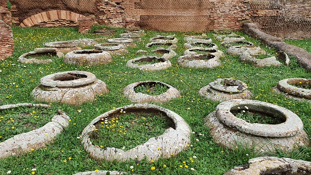 El templo principal de la ciudad, dedicado a la
tríada capitolina (Júpiter, Juno, Minerva), fue construido en la época
de Adriano.
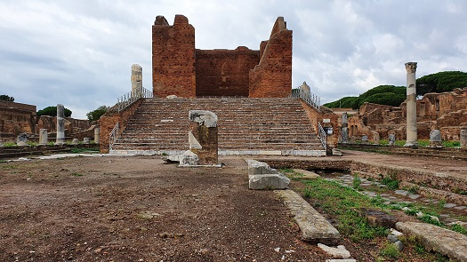 Templo de Roma y Augusto data del siglo I. Del edificio quedan las subestructuras y parte de la decoración arquitectónica original en mármol, incluido el frontón trasero y la estatua de la Victoria, que estaría en la parte superior del tejado: estos elementos de mármol ahora se vuelven a montar en una pared moderna, en las proximidades del edificio original.
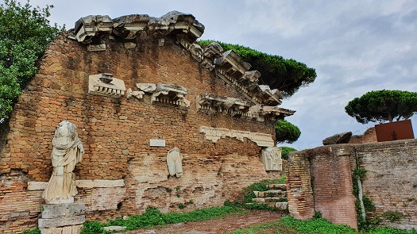 La Palestra de las Termas del Foro. Al sur de las salas climatizadas hay un gran gimnasio de forma trapezoidal, rodeado por tres lados por un pórtico con columnas de mármol. Detrás del pórtico hay comercios, mientras que en el lado sur hay una sala dividida en dos partes por columnas, quizás sería la sede de una corporación; en la esquina suroeste del gimnasio hay un pequeño templo de ladrillos.
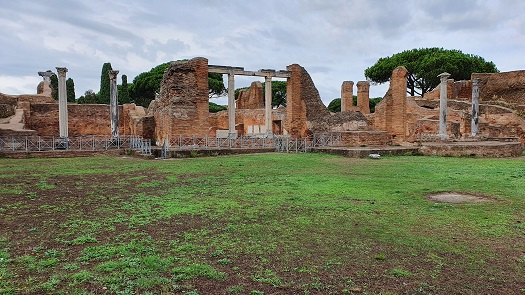 De Ostia Antica también destacamos sus Domus como la del Ninpheum y de la Fortuna Annonaria, Insulas, sus Termopoliun, Horrea, Templos, Colegia, Panaderias, Termas, Capuona, Fullonica, Fuentes, Ninfeos, Calles... y la visita obligada al Museo Ostiense.
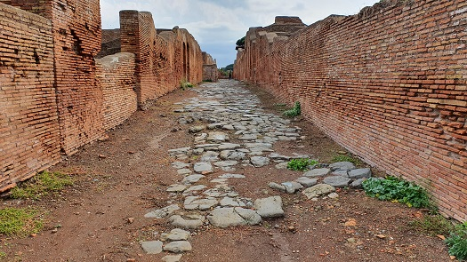
|